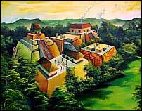
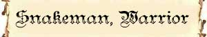
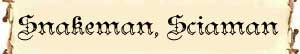
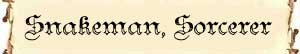

Descrizione Generale
Gli Snakeman sono esseri serpentiformi di grosse dimensioni. Il loro corpo è per metà serpente e per metà umano. In particolare è costituiro da un busto umano che al posto delle gambe possiede un corpo di serpente lungo circa tre metri. Gli Snakeman sono esseri particolarmente agili e si muovono strisciando con movimenti sinuosi alla stessa velocità di un umano. I loro capelli sono grigiastri e molto ispidi mentre i loro occhi sono dorati senza che la pupilla possa distinguersi dall'iride.
Habitat/Society
Gli Snakeman sono
creature intelligenti che hanno sviluppato una cultura autonoma. Sono esseri
schivi e dimorano nelle cuore delle foreste più selvagge o delle paludi
inaccessibili lontani dalle altre razze. La loro società è basata su crudeli
regole tribali che gli Snakeman rispettano in modo fanatico ed intransigente. In
particolare nella loro società gli Snakeman sono suddivisi in tre rigide
categorie. I guerrieri, che rappresentano la maggioranza numerica di queste
creature, sono addestrati all'arte della guerra e si occupano della caccia e
della difesa della comunità dai pericoli esterni; gli stregoni, apprendisti di
arti magiche, che sono detentori delle scienze e del sapere; gli sciamani che
sono i custodi delle tradizioni e del culto. Nonostante gli Snakeman siano
creature assai intelligenti, il loro carattere schivo e violento nonché la loro
cultura tribale e settaria impediscono loro di svilupparsi in una fiorente
civiltà.
Le piccole comunità di Snakeman occupano caverne naturali che abbelliscono con
graffiti ed incisioni murali mentre quelle più grandi, sfruttando la manodopera
delle creature più deboli che hanno la tendenza a ridurre in schiavitù,
costruiscono anche cittadelle con strutture in pietra e templi piramidali con
architettura simile a quella delle cultura Maya.

Ecology
Non esistendo fra le varie tipologie di Snakeman un grande divario di forza, è un fenomeno comune che una creatura più forte si insedi nelle loro comunità per acquisirne il controllo. Sebbene gli Snakeman non abbiamo alcuna relazione biologica con le Naga, la natura serpentiforme di entrambi accomuna questi esseri. Per tale motivo, in alcune circostanze gli Snakeman accolgono le Naga nelle loro comunità. Non di rado, quando ciò accade, le Naga, che sono dotate di superiore forza, assumono il controllo di tali comunità utilizzando gli Snakeman come loro sudditi.
| No. Appearing (Pattuglia) | 1d3+1 Warriors + 33% 1 Sciaman + 33% 1 Sorcerer |
| No. Appearing (Comunità Piccola) | 2d8+4 Warriors + 1d3+1 Sciaman + 1d3+1 Sorcerer |
| No. Appearing (Comunità Grande) | 4d10+10 Warriors + 1d6+4 Sciaman + 1d6+4 Sorcerer |
Mystical Resource Sourge (Cuore) Quantità: 1, Presenza 33% - Effetto Particolare: Resistenza al Veleno - Qualità della Risorsa: Common.
Tesoro delle Comunità
Oltre al tesoro individuale, le comunità (piccola e grande), possiedono solitamente un tesoro collettivo come indicato nelle seguenti tabelle:
Tesoro delle Comunità Piccola
| Tipologia di Tesoro | 1 Dado Vita | Quantità |
| Gemme |
33 % |
2d6+3 |
| Oggetti Preziosi | 25% | 1d4 |
| Oggetti Comuni | 33% | 1d3 |
| Armi | 33% | 1d6 |
| Armature | 33% | 1d3 |
| Oggetto Magico | 25% + 15% | 1 oggetto magico 1d10: (1-7) common (8-10) rare |
| Monete di platino | 25% | 1d10 * 15 monete di platino |
| Monete d'oro | 50% + 33% +25% | 1d12+3* 100 monete d'oro |
| Monete d'argento | 50% | 2d12+6 * 100 monete di argento |

| Ambiente/Habitat | Paludi / Foreste |
| Frequenza | Uncommon / Rare |
| Organizzazione | Gruppo |
| Periodo di Attività | Qualsiasi |
| Dieta | Carnivora |
| Intelligenza | Average Intelligence (10) |
| Punti Combattimento | 10 punti combattimento |
| Tesoro | Tesoro Comune |
| Allineamento Dominante | Legale Malvagio |
| Numero di Apparizione | Vedi Sopra |
| Classe Armatura | 3 [10 base, -5 corazza, -2 destrezza] |
| Movimento | 8 esagoni / Nuotare 6 esagoni |
| Dadi Vita | 4 (+5 punti ferita) |
| Thac0 | 15 |
| Numero di Attacchi | Scimitarra / Scimitarra |
| Danni | 1d8+3 (Taglio) / 1d8+3 (Taglio) |
| Poteri Offensivi | Impeto Superiore; |
| Poteri Difensivi | Schivata Superiore; Robustezza Superiore (5); |
| Poteri Generici | Nessuno |
| Vulnerabilità | Nessuna |
| Resistenza alla Magia | Nessuna |
| Sensi | Vista Comune |
| Dimensioni | Large (3 m. lunghi) |
| Morale | Champion (15) |
| Valore in Punti Esperienza | 504 |
| MODIFICATORI AI TIRI SALVEZZA | |||||||||||||||||||||||
| COR | 0 | 49 | ENV | 0 | 55 | MAG | 0 | 62 | MAL | 0 | 47 | MEN | 0 | 60 | RIF | +5 | 51 | ROB | 0 | 51 | VEL | +20 | 24 |
Combat
Gli Snakeman Warrior sono i guerrieri della razza degli Snakeman e rappresentano la tipologia più comune di queste creature. Costoro possono attaccare simultaneamente i propri avversari utilizzando due scimitarre (la scimitarra rappresenta l'arma tipicamente utilizzata da queste creature) ed applicando un bonus al danno pari a +3 (per la forza impressa nei colpi inflitti). Costoro, quindi, possono effettuare due attacchi al round ad un fattore iniziativa +6 con Thac0 15 e provocando 1d8+3 danni da taglio per attacco.
IMPETO SUPERIORE (Superior Special Ability): Questa creatura riesce a colpire i propri avversari con impeto superiore, per tale motivo riceve un bonus costante di +2 ai suoi tiri per colpire.
SCHIVATA SUPERIORE (Superior Special Ability): La creatura è particolarmente agile. Una volta al round, infatti, la stessa potrà provare a schivare un qualsiasi attacco ricevuto in corpo a corpo da una posizione frontale che non sia di dimensioni superiori a large. La creatura ha il 33% di riuscire a schivare il colpo in arrivo. Questo tiro percentuale va effettuato prima del tiro per colpire effettuato dall'avversario. Se l'avversario effettua un 20 naturale sull'attacco che la creatura era riuscita a schivare lo stesso andrà comunque a segno ma senza conseguenze critiche. Al tiro percentuale andranno applicate le penalità previste per il mantenimento della concentrazione in situazioni di combattimento particolari (come ad esempio incapacitato). La creatura non potrà provare a schivare in alcun caso attacchi a distanza.
ROBUSTEZZA SUPERIORE (Typical Ability): Il fisico della creatura è estremamente robusto. Ciò conferisce alla stessa una robustezza superiore che gli garantisce 5 punti ferita supplementari.

| Ambiente/Habitat | Paludi / Foreste |
| Frequenza | Uncommon / Rare |
| Organizzazione | Gruppo |
| Periodo di Attività | Qualsiasi |
| Dieta | Carnivora |
| Intelligenza | Average Intelligence (12) |
| Punti Combattimento | 12 punti combattimento |
| Tesoro | Tesoro Comune |
| Allineamento Dominante | Legale Malvagio |
| Numero di Apparizione | Vedi Sopra |
| Classe Armatura | 4 [10 base, -5 corazza, -1 destrezza] |
| Movimento | 8 esagoni / Nuotare 6 esagoni |
| Dadi Vita | 4 (+5 punti ferita) |
| Thac0 | 17 |
| Numero di Attacchi | Scimitarra |
| Danni | 1d8+2 (Taglio) |
| Poteri Offensivi | Weapon Casting; Incantesimi; |
| Poteri Difensivi | Robustezza Superiore (5); |
| Poteri Generici | Nessuno |
| Vulnerabilità | Nessuna |
| Resistenza alla Magia | Nessuna |
| Sensi | Vista Comune |
| Dimensioni | Large (3 m. lunghi) |
| Morale | Champion (15) |
| Valore in Punti Esperienza | 331 |
| MODIFICATORI AI TIRI SALVEZZA | |||||||||||||||||||||||
| COR | 0 | 49 | ENV | 0 | 55 | MAG | 0 | 62 | MAL | 0 | 47 | MEN | +10 | 50 | RIF | 0 | 56 | ROB | 0 | 51 | VEL | +20 | 24 |
Combat
Gli Snakeman Sciaman sono i religiosi della comunità degli Snakeman. Costoro venerano il dio Serpente nonostante non seguano la disciplina del suo culto come si è diffusa tra gli umani. Non di rado offrono in sacrificio al dio Serpente le creature catturate dalla comunità in macabri rituali notturni alla luce della luna. Nonostante tale loro propensione costoro non possono considerarsi a tutti gli effetti appartenenti alla classe dei sacerdoti né possono ritenersi veri ministri del culto del Serpente. In ogni caso, la loro devozione è premiata dalla divinità che concede loro alcuni poteri speciali.
WEAPON CASTING (Lesser Special Ability): Gli Snakeman Sciaman possono lanciare le magie impugnando una scimitarra.
Costrizione del Serpente (Casting Ability): Fino a due volte al giorno gli sciamani possono lanciare questa magia di 1° livello di potere al 7° livello di lancio:
| Range : | 15 metri |
| Components : | V,S |
| Duration : | 1 round per level |
| Casting Time : | 4 |
| Area of Effect : | Una creatura |
| Saving Throw : | Negates |
Questa magia fa apparire intorno alla vittima che fallisce il tiro salvezza contro incantesimi un serpente gigante di nebbia verdastra che inizia a stritolarla fra le sue enormi spire. Il serpente ostacola la maggior parte dei movimenti della vittima che si considererà incapacitata per tutta la durata dell'incantesimo. Si noti che chi è incapacitato può continuare a muoversi ed a compiere le sue azioni ma le sue capacità di azione sono ridotte. Per questo motivo riceve una penalità di -2 a tutti i suoi tiri ed il 20% di non riuscire a concentrarsi nel lancio delle magie, inoltre può muoversi solo alla metà del suo fattore movimento. Se costretto ad effettuare un tiro (ad es. un tiro salvezza) costui riceve una penalità di -2 (-10% ai tiri salvezza) su tutti i tiri contro effetti che sarebbero stati più facili da evitare qualora costui fosse stato in grado di muoversi normalmente. Gli avversari che lo attaccano ricevono un bonus di +2 al tiro per colpire. Il serpente non ha consistenza per tutte le altre creature e quindi non blocca attacchi e magie diretti contro la vittima. Il serpente può bloccare creature di dimensione S , M , mentre le L hanno un bonus di + 2 al tiro salvezza, creature più piccole o più grandi non saranno affette dalla magia.
Richiamo del Serpente (Casting Ability): Una volta al giorno gli sciamani possono lanciare questa magia di 2° livello di potere al 7° livello di lancio:
| Range : | 0 |
| Components : | V,S |
| Duration : | 3 rounds + 1 round per level |
| Casting Time : | 1 round |
| Area of Effect : | Un Serpente |
| Saving Throw : | None |
Questa magia fa apparire alla fine del round si lancio un serpente che seguirà gli ordini dello sciamano aiutandolo in battaglia. Il serpente apparirà in una casella selezionata a sorte tra quelle libere più vicine allo sciamano stesso. La tipologia del serpente sarà determinata tirando 1d6: 1-3) Apparirà un serpente velenoso del tipo Vipera Comune che avrà le seguenti statistiche: AC 6 , DV 2+1, Thac0 19, Att. 1 (morso), Ferite 1 (taglio, Iniziativa +3, Move 12, Size Small - Attacco Speciale: Veleno [Tipo Insinuativo, Onset 1d4 rounds, Effetto 0/15, Delay 3, Mod. TS 0, Ass. None]. 4-6) Apparirà un serpente constrictor sarà un Boa delle Colline che avrà le seguenti statistiche: AC 5 , DV 3+2, Thac0 17, Att. 1 (morso), Ferite 1 (taglio), Iniziativa +3, Move 9, Size Medium - Attacco Speciale: Stritolamento [Se il serpente colpisce con il morso stritola la vittima la quale alla fine del round in corso e di quelli successivi subisce automaticamente i relativi danni da stritolamento (senza che sia più richiesto alcun tiro per colpire). Il serpente può continuare a mordere l'avversario stritolato (necessitando di un tiro per colpire ad ogni tentativo). Chi è stritolato può agire come se fosse incapacitato ma non può spostarsi dalla posizione occupata. Se chi è stritolato desidera liberarsi, costui può effettuare un'azione che impegna un intero round (facendo accumulare 1 punto fatica) ed al termine del round potrà effettuare una prova di aprire porte sulla forza applicando il relativo modificatore previsto dal serpente ed un'ulteriore penalità cumulativa di -1 per ogni livello di affaticamento raggiunto. Se la prova fallisce, la vittima resterà stritolata subendo i relativi danni previsti; se la prova riesce la vittima si libererà e non subirà i danni da stritolamento alla fine del round. Ogni creatura che aiuti la vittima a liberarsi conferisce un bonus pari alla metà del suo valore di aprire porte (per difetto), costoro devono impiegare l'intero round, avere entrambe le mani libere e accumulare 1 punto fatica. Chi attacca il serpente ha il 30% di possibilità di dirigere il proprio attacco contro la vittima, utilizzando 3 punti combattimento questa percentuale scende al 15% e l'attaccante si considererà aver utilizzato nel round un colpo speciale di combattimento. Effetti e magie ad area che colpiscono la posizione occupata dal serpente o quella occupata dalla vittima avranno effetto su ambedue le creature (anche se lanciati precedentemente allo stritolamento)].
ROBUSTEZZA SUPERIORE (Typical Ability): Il fisico della creatura è estremamente robusto. Ciò conferisce alla stessa una robustezza superiore che gli garantisce 5 punti ferita supplementari.

| Ambiente/Habitat | Paludi / Foreste |
| Frequenza | Uncommon / Rare |
| Organizzazione | Gruppo |
| Periodo di Attività | Qualsiasi |
| Dieta | Carnivora |
| Intelligenza | Average Intelligence (13) |
| Punti Combattimento | 16 punti combattimento |
| Tesoro | Tesoro Comune |
| Allineamento Dominante | Legale Malvagio |
| Numero di Apparizione | Vedi Sopra |
| Classe Armatura | 4 [10 base, -5 corazza, -1 destrezza] |
| Movimento | 8 esagoni / Nuotare 6 esagoni |
| Dadi Vita | 4 (+5 punti ferita) |
| Thac0 | 17 |
| Numero di Attacchi | Scimitarra |
| Danni | 1d8+2 (Taglio) |
| Poteri Offensivi | Weapon Casting; Incantesimi; |
| Poteri Difensivi | Robustezza Superiore (5); |
| Poteri Generici | Nessuno |
| Vulnerabilità | Nessuna |
| Resistenza alla Magia | Nessuna |
| Sensi | Vista Comune |
| Dimensioni | Large (3 m. lunghi) |
| Morale | Champion (15) |
| Valore in Punti Esperienza | 386 |
| MODIFICATORI AI TIRI SALVEZZA | |||||||||||||||||||||||
| COR | 0 | 49 | ENV | 0 | 55 | MAG | +10 | 52 | MAL | 0 | 47 | MEN | 0 | 60 | RIF | 0 | 56 | ROB | 0 | 51 | VEL | +20 | 24 |
Combat
Gli Snakeman Sorcerer sono i conoscitori della magia all'interno alla comunità degli Snakeman. Costoro hanno appreso formule magiche che consentono loro di ottenere effetti mentali sulle creature avversarie. La loro conoscenza della magia, infatti, è limitate ad alcune formule magiche della scuola Charm che risultano particolarmente compatibili con i movimenti sinuosi dei loro corpi. Per tale motivo, gli Snakeman Sorcerer sono dotati dei seguenti poteri speciali.
WEAPON CASTING (Lesser Special Ability): Gli Snakeman Sciaman possono lanciare le magie impugnando una scimitarra.
(Casting Ability) 3/giorno al 6° livello di lancio - Hesitate (Charm) [1° livello di potere, 1° grado]
Range: 30
metri
Components: V
Duration: 3 rounds + 1 round per level
(9 rounds)
Casting Time: 2
Area of Effect: One creature
Saving Throw: Negates
Quando il mago lancia questo incantesimo su una creatura avversaria la stessa dovrà superare un tiro salvezza contro incantesimi mentali. Se il tiro salvezza fallisce, a partire dal round successivo e per tutta la sua durata (3 rounds + 1 round per livello di lancio della magia fino ad un massimo di 10 rounds al 7° livello di lancio) la vittima esiterà a prendere le proprie decisioni e dovrà addizionare un malus di 1d6 al proprio tiro sull'iniziativa (il tiro relativo alla penalità deve essere ripetuto ogni round ed effettuato dopo la dichiarazione delle intenzioni). Le creature sotto effetto della magia velocità (haste) o di effetti magici equivalenti sono immuni agli effetti di questo incantesimo.
(Casting Ability) 1/giorno al 6° livello di lancio - Holding Sight (Charm) [1° livello di potere, 3° grado]
Range: 0
Components: V, S
Duration: 3 rounds + 1 round/2 livelli
(6 rounds)
Casting Time: 1 round
Area of Effect: The Caster
Saving Throw: Special
Quando il mago lancia questo incantesimo su se stesso i propri occhi acquisiscono un potere magico ipnotico. Per tale motivo, a partire dal round successivo a quello di lancio e per tutta la durata della magia (3 rounds al primo livello di lancio, 4 rounds al 2° ed al 3° livello di lancio, 5 rounds al 4° e 5° livello di lancio, e così via) il mago potrà indirizzare il proprio sguardo su una singola creatura che si trovi entro 9 metri di distanza dallo stesso e che abbia al massimo 6 dadi vita/livelli (indipendentemente dagli eventuali bonus di costituzione dalla stessa posseduti). Quest'azione si considera un'azione complessa che si svolge ad un fattore iniziativa pari a +1 e può essere effettuata anche dopo un mezzo movimento non essendo necessario il mantenimento della concentrazione. Quando ciò accade, la vittima deve superare un tiro salvezza contro incantesimi mentali o terminare immediatamente ogni azione che stava compiendo nel round in corso. La vittima, però, non subirà alcuna penalità alla propria classe armatura ed ai propri tiri salvezza in quanto costei potrà continuare a difendersi passivamente. Il round successivo, la vittima sarà libera di agire ed il mago potrà nuovamente provare ad utilizzare il potere dello sguardo sulla stessa (che avrà diritto ad un nuovo tiro salvezza) o su una diversa creatura. Si noti che, affinché questo incantesimo abbia effetto, occorre che il mago incroci il proprio sguardo con quello della vittima, per tale motivo, lo sguardo non avrà alcun effetto su creature cieche, accecate oppure prive di organi visivi.
(Casting Ability) 2/giorno al 6° livello di lancio - Lesser Confusion (Charm) [1° livello di potere, 4° grado]
Range: 15
metri
Components: V, S
Duration: 1 round + 1 round per livello
(7 rounds)
Casting Time: 1 round
Area of Effect: One creature
Saving Throw: Negates
Quando il
mago lancia questo incantesimo la vittima dovrà superare un tiro salvezza contro
incantesimi mentali. Se la vittima fallisce il tiro salvezza la stessa sarà
confusa e, a partire dal round successivo, dovrà effettuare, per l'intera durata
dell'incantesimo, un tiro di 1d6 per determinare le proprie azioni. Si consulti
la seguente tabella per determinare all'inizio del round (nella fase delle
intenzioni) l'azione della vittima:
1-2) La vittima potrà agire normalmente.
3-4) La vittima attaccherà la creatura a costei più vicina (se vi sono creature
equidistanti, verificare a sorte quella attaccata).
5-6) La vittima resterà ferma sul posto senza compiere alcuna azione (non subirà
però penalità alla propria classe armatura).
Il tiro per determinare l'azione della vittima dovrà essere ripetuto ogni
singolo round. Si noti che qualora si verifichi il risultato di attacco alla
creatura più vicina (3-4) la vittima effettuerà i suoi attacchi comuni più
lesivi (scegliendo ad es. l'arma che possa provocare più danni) senza però
effettuare attacchi o poteri speciali, senza lanciare incantesimi e senza
utilizzare punti combattimento.
(Casting Ability) 1/giorno al 6° livello di lancio - Venom (Conjuration) [2° livello di potere, 4° grado]
Range: 30
metri
Components: V, S
Duration: Istantanea
Casting Time: 5
Area of Effect: One creature
Saving Throw: Special
Questo incantesimo richiama ad esistenza un dardo comune da cerbottana avvelenato che viaggia verso la vittima e la trafigge avvelenandola, il dardo colpisce sicuramente la vittima la quale subisce 1 danno da penetrazione e l'avvelenamento. Alla vittima è consentito un tiro salvezza contro veleno per ridurre gli effetti del veleno. Si noti che per produrre effetti l'ago dovrà comunque penetrare la pelle della vittima, per cui magie come Sand Skin o protezioni similari impediranno a questo incantesimo di produrre effetto. Il veleno ha le seguenti caratteristiche: Tipo Insinuativo, Onset 1d4 rounds, Effetto 3/18, Delay 3, Mod. TS 0, Ass. None]
ROBUSTEZZA SUPERIORE (Typical Ability): Il fisico della creatura è estremamente robusto. Ciò conferisce alla stessa una robustezza superiore che gli garantisce 5 punti ferita supplementari.